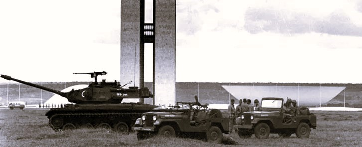

JALANNYA KUDETA

Tank M41 dan jip Tentara Brazil di Esplanada dos Ministérios, dekat Istana Kongres Nasional, Brasília - 1 April 1964 [sumber: Arquivo Nacional]
RINGKASAN EKSEKUTIF
Kudeta 1964 dimulai pada 31 Maret 1964 dini hari ketika Jenderal Olímpio Mourão Filho, Komandan Wilayah Militer ke-4 yang bermarkas di Juiz de Fora, Minas Gerais, memerintahkan pasukannya untuk bergerak menuju Rio de Janeiro. Presiden João Goulart awalnya memiliki keunggulan taktis, namun membiarkan kesempatan itu berlalu karena menghindari perang saudara. Dalam waktu 48 jam, terjadi defeksi massal yang membuat posisi militer Goulart runtuh. Ia melakukan perjalanan berturut-turut dari Rio de Janeiro ke Brasília, kemudian Porto Alegre, dan akhirnya ke pengasingan di Uruguay. Kongres mendeklarasikan kursi kepresidenan kosong pada 2 April meskipun Goulart masih berada di wilayah Brasil. [citation:1][citation:2]
KRONOLOGI PER JAM
01:00 - 04:00
PASUKAN BERGERAK DARI JUIZ DE FORA
Jenderal Olímpio Mourão Filho, tanpa koordinasi penuh dengan konspirator utama lainnya, memerintahkan Brigade Infanteri ke-4 yang dikenal sebagai "Brigade Tiradentes" (sekitar 3.000 personel) untuk mulai bergerak menuju Rio de Janeiro melalui jalan raya. Mourão kemudian mengklaim bahwa ia bertindak berdasarkan "hak untuk memberontak melawan pemerintahan yang korup dan komunis." [citation:1][citation:4]
Pergerakan ini mengejutkan petinggi konspirator lainnya, termasuk Jenderal Amaury Kruel (Komandan Angkatan Darat ke-2 di São Paulo) dan Jenderal Castelo Branco. Kruel menyebut tindakan Mourão sebagai "quartelada" (petualangan militer dari barak) dan awalnya ragu untuk bergabung. [citation:4]
07:00 - 10:00
REAKSI AWAL DI RIO DE JANEIRO
Berita pergerakan pasukan mencapai Rio de Janeiro. Jenderal Argemiro Assis Brasil, ajudan militer Goulart, merasa yakin dapat mengatasi pemberontakan. Sementara itu, Castelo Branco dua kali mencoba menghentikan laju Mourão karena merasa waktunya belum tepat, namun gagal. Pasukan loyalis mulai bersiap, namun komando masih terpecah. [citation:4]
12:00 - 15:00
GUBERNUR SAO PAULO MENYATAKAN DUKUNGAN
Gubernur São Paulo, Adhemar de Barros, secara resmi menyatakan dukungannya kepada gerakan militer. Ini menjadi sinyal penting karena São Paulo adalah negara bagian terkaya dan terpenting secara ekonomi. Jenderal Kruel mulai melunakkan sikapnya. [citation:1]
Sementara itu, mantan Presiden Juscelino Kubitschek mencoba menawarkan mediasi dengan mengusulkan reshuffle kabinet untuk menenangkan militer, namun tawaran ini ditolak. [citation:6]
16:00 - 19:00
KAWALAN LAUT: USS FORRESTAL BERLAYAR
Di Atlantik Selatan, kapal induk USS Forrestal dan tiga kapal perusak Amerika Serikat dikerahkan ke lepas pantai Brazil sebagai bagian dari Operation Brother Sam. Secara resmi disebut sebagai "latihan militer rutin", armada ini membawa 600 ton amunisi dan bahan bakar yang siap dikirim jika pasukan pemberontak membutuhkannya. [citation:1]

20:00 - 22:00
TELEPON KRUELL-GOULART
Pada sekitar pukul 22:00, Jenderal Amaury Kruel menelepon Presiden Goulart. Kruel mengajukan dua tuntutan ultimatum:
- Memecat Menteri Kehakiman dan Kepala Staf Kabinet Sipil (yang dianggap komunis)
- Melarang organisasi buruh Comando Geral dos Trabalhadores (CGT)
Goulart menjawab: "Jenderal, saya tidak meninggalkan teman-teman saya. Saya lebih baik bertahan dengan pendukung saya. Anda harus mengikuti keyakinan Anda. Letakkan pasukan Anda di jalan dan khianati saya, secara terbuka." [citation:4]
Kruel menelepon dua kali lagi setelahnya, tetap meminta hal yang sama, namun Goulart konsisten menolak.
23:00
KEPUTUSAN KRUEL
Setelah panggilan ketiga, Kruel memutuskan untuk bergabung dengan pemberontak. Pasukan Angkatan Darat ke-2 mulai bergerak menuju Vale do Paraíba, perbatasan antara São Paulo dan Rio de Janeiro. Ini adalah titik balik kritis. [citation:4]
Sementara itu, Brigade Tiradentes dari Juiz de Fora telah mencapai perbatasan antara Minas Gerais dan Rio de Janeiro. Mourão Filho menyiarkan proklamasi anti-pemerintah yang disiarkan ke seluruh negeri.
00:00 - 03:00
MALAM KEPUTUSAN
Di Rio de Janeiro, situasi memburuk dengan cepat. Jenderal Kruel secara terbuka menyatakan dukungannya kepada pemberontak. Pasukan di negara bagian Paraná dan Santa Catarina mulai menyatakan bergabung. [citation:1]
Pada dini hari, hanya Angkatan Darat ke-1 (di bawah Jenderal Âncora) yang masih loyal kepada Goulart. Namun moral pasukan mulai goyah karena berita defeksi massal.
12:45
GOULART MENINGGALKAN RIO
Presiden Goulart meninggalkan Rio de Janeiro menuju Brasília dengan pesawat, dengan harapan dapat menggalang dukungan dari Kongres dan mempertahankan pemerintahan. Saat ia terbang, Angkatan Darat ke-2 Kruel terus maju menuju Rio. [citation:4]
Pada saat yang sama, Jenderal Costa e Silva, salah satu pemimpin kudeta, menghubungi komandan unit yang masih ragu-ragu dan meyakinkan mereka untuk bergabung.
15:00
GOULART DI BRASÍLIA
Goulart tiba di Brasília dan mengadakan pertemuan darurat. Namun, situasi sudah tidak dapat diselamatkan. Ia mengetahui bahwa hampir seluruh garnisun militer telah bergabung dengan pemberontak. Kongres dalam kekacauan. [citation:6]
17:00
GOULART TERBANG KE PORTO ALEGRE
Dari Brasília, Goulart terbang ke Porto Alegre, ibu kota Rio Grande do Sul, negara bagian asalnya. Ia berharap dapat mengandalkan dukungan Gubernur Leonel Brizola (iparnya) dan Jenderal Ladário Pereira Teles, komandan Angkatan Darat ke-3. [citation:1]
Malam
KONTROL PEMBERONTAK MELUAS
Pada akhir 1 April, pemberontak telah menguasai sebagian besar Brasil. Hanya Rio Grande do Sul yang masih belum sepenuhnya berada di bawah kendali mereka. Jenderal Costa e Silva mengumumkan bahwa "revolusi" telah menang. [citation:2]
00:30 - 03:00
SIDANG TENGAH MALAM KONGRES
Di Brasília, Presiden Senat Auro de Moura Andrade memimpin sidang darurat Kongres pada dini hari. Dengan cepat, ia mendeklarasikan kursi kepresidenan kosong (vago), dengan alasan bahwa Presiden Goulart telah "melarikan diri dari negara" meskipun Goulart saat itu masih berada di Porto Alegre, wilayah Brasil. [citation:1][citation:5]
Deklarasi ini kontroversial secara konstitusional karena Goulart belum mengundurkan diri dan masih berada di dalam negeri. Presiden Kamar Deputi, Ranieri Mazzilli, secara otomatis ditunjuk sebagai presiden sementara. [citation:5][citation:8]
"Saya bersama Jango malam itu di Porto Alegre. Ia tidak melarikan diri ke luar negeri. Kongres berbohong."
08:00 - 12:00
RIO GRANDE DO SUL JATUH
Di Porto Alegre, Jenderal Ladário memberi tahu Goulart bahwa ia tidak dapat menjamin keselamatan presiden. Tekanan dari pemberontak dan ancaman pengeboman memaksanya menyerah. Goulart meninggalkan Porto Alegre menuju ke pedalaman, ke peternakannya di São Borja. [citation:1]
GOULART MENUJU PENGASINGAN
Dari São Borja, Goulart menyeberang ke Uruguay, memulai pengasingan yang akan berlangsung hingga kematiannya pada 1976. Ia tidak pernah kembali ke Brasil. [citation:1]
Goulart melakukan perjalanan sejauh lebih dari 3.000 km dalam 4 hari, mencoba menghindari perang saudara
ANALISIS KEKUATAN MILITER SAAT KRISIS
| KOMANDO | MARKAS | KOMANDAN | POSISI |
|---|---|---|---|
| Exército I (Angkatan Darat ke-1) | Rio de Janeiro | Jend. Armando de Moraes Âncora | LOYAL (awal), kemudian terisolasi |
| Exército II (Angkatan Darat ke-2) | São Paulo | Jend. Amaury Kruel | BERPALING (31 Maret malam) |
| Exército III (Angkatan Darat ke-3) | Porto Alegre | Jend. Ladário Pereira Teles | LOYAL (awal), menyerah 2 April |
| IV Exército (Angkatan Darat ke-4) | Recife | Jend. Justino Alves Bastos | PEMBERONTAK |
| 4ª Região Militar | Juiz de Fora | Jend. Olímpio Mourão Filho | PEMBERONTAK (pemicu) |
Sumber: Brazilian Military History Archive [citation:1][citation:6]

Jenderal Olímpio Mourão Filho (kiri), komandan yang memulai pergerakan pasukan dari Juiz de Fora

Pesawat Presiden João Goulart lepas landas menuju Porto Alegre, 1 April 1964
OPERASI BROTHER SAM: INTERVENSI AS
Operasi Brother Sam adalah nama sandi untuk dukungan logistik dan angkatan laut Amerika Serikat kepada pasukan pemberontak. Armada yang dikerahkan terdiri dari: [citation:1][citation:4]
- Kapal induk USS Forrestal (CVA-59) - membawa 40 pesawat serang
- Kapal perusak USS Walker (DD-517)
- Kapal tanker USS Betelgeuse (AK-260)
- Kapal angkut amunisi USS Diamond (AK-153)
Armada ini berlayar menuju perairan Brazil pada 31 Maret 1964 dan tetap siaga hingga 3 April, ketika kudeta sudah berhasil. Selain dukungan laut, CIA juga menyediakan dana dan pelatihan untuk elemen anti-Goulart melalui stasiun CIA di Rio de Janeiro. [citation:1]
PERAN KONSPIRATOR SIPIL
Kudeta ini bukan hanya militer; tiga gubernur negara bagian memainkan peran kunci: [citation:3]
- Magalhães Pinto (Minas Gerais) - menyediakan basis politik dan logistik untuk pasukan Mourão Filho
- Adhemar de Barros (São Paulo) - menggerakkan dukungan politik dan memastikan Jenderal Kruel bergabung
- Carlos Lacerda (Guanabara/Rio de Janeiro) - kampanye anti-Goulart di media dan menyediakan dukungan politik
Para konspirator sipil ini berharap kudeta hanya bersifat sementara ("moderator") dan akan segera kembali ke pemerintahan sipil dengan salah satu dari mereka menjadi presiden dalam pemilu 1965. Namun harapan ini tidak terwujud. [citation:3]
INSIDEN PEMBERONTAKAN PELAUT (25 MARET 1964)
Enam hari sebelum kudeta, sekitar 2.000 pelaut dan marinir bermarkas di Rio de Janeiro mengadakan pertemuan menuntut perbaikan kondisi hidup dan menyatakan dukungan kepada reformasi Goulart. Menteri Angkatan Laut, Laksamana Sílvio Mota, memerintahkan penangkapan para pemimpin pertemuan. Namun, detasemen marinir yang dipimpin oleh Laksamana Cândido Aragão justru bergabung dengan para pelaut. [citation:4]
Goulart campur tangan, memecat Mota dan memberikan amnesti kepada para pelaut yang ditahan. Tindakan ini memicu kemarahan besar di kalangan perwira angkatan laut dan mempercepat konsolidasi oposisi militer. [citation:4]
PIDATO TERAKHIR: 30 MARET 1964
Sehari sebelum kudeta, Goulart menghadiri pertemuan sersan di Rio de Janeiro (Automóvel Club). Dalam pidatonya yang emosional, ia mengecam oposisi dan menegaskan komitmennya pada reformasi dasar. Ia juga meminta dukungan dari personel militer pangkat rendah. [citation:4]
Pidato ini dilihat oleh para perwira sebagai pelanggaran rantai komando dan hasutan terhadap disiplin militer, menjadi salah satu pemicu langsung kudeta keesokan harinya. [citation:4]
DEKLARASI VACANCY DAN PEMBENTUKAN JUNTA
Setelah Kongres mendeklarasikan kursi presiden kosong pada 2 April dini hari, kekuasaan eksekutif secara formal dipegang oleh Presiden Kamar Deputi, Ranieri Mazzilli. Namun kekuasaan sebenarnya berada di tangan Komando Tertinggi Revolusi (Comando Supremo da Revolução), sebuah junta militer yang terdiri dari: [citation:8]
- Jenderal Artur da Costa e Silva (mewakili Angkatan Darat)
- Laksamana Augusto Rademaker Grünewald (mewakili Angkatan Laut)
- Brigadir Francisco de Assis Correia de Melo (mewakili Angkatan Udara)
Pada 9 April, junta ini mengeluarkan Ato Institucional Nº 1 (AI-1), yang memberikan legitimasi hukum untuk tindakan di luar konstitusi, termasuk wewenang untuk membekukan hak politik, mencabut mandat legislatif, dan memecat pegawai negeri. [citation:8]
"Saya tidak ingin menjadi presiden yang dekoratif. Saya lebih baik bertahan dengan rakyat saya."
KORBAN JIWA
Secara resmi, kudeta ini berlangsung dengan sedikit pertumpahan darah. Namun, tercatat 7 warga sipil pro-pemerintah tewas dalam berbagai insiden selama dua hari kritis tersebut. Angka ini tidak termasuk korban dalam minggu-minggu setelahnya saat rezim baru mulai membersihkan lawan politik. [citation:1]